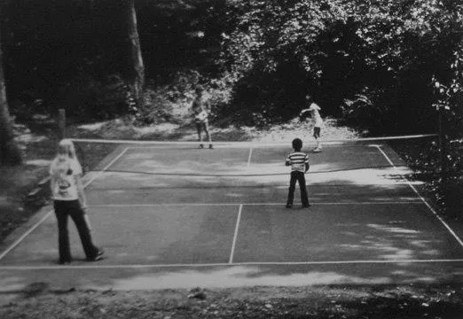
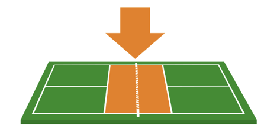
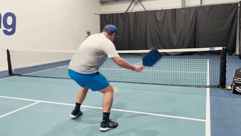
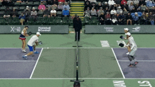
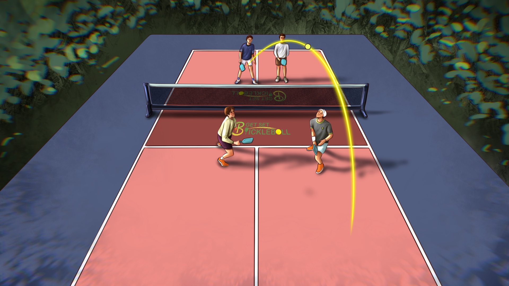
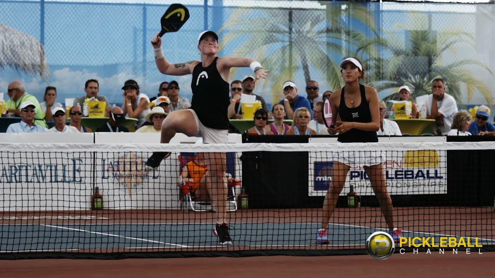
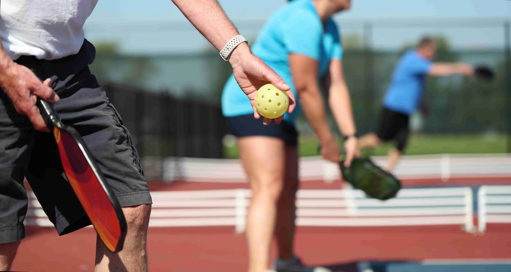
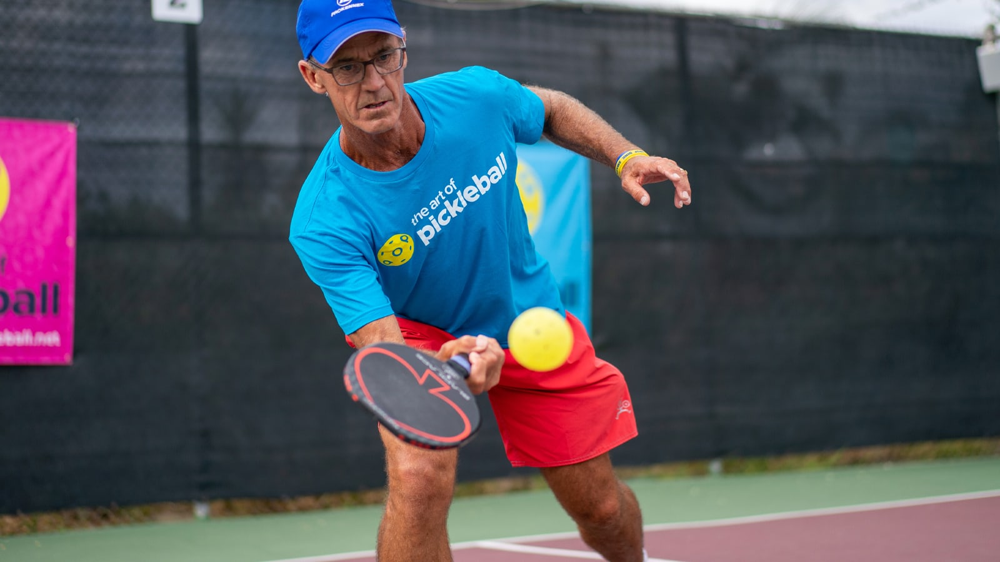
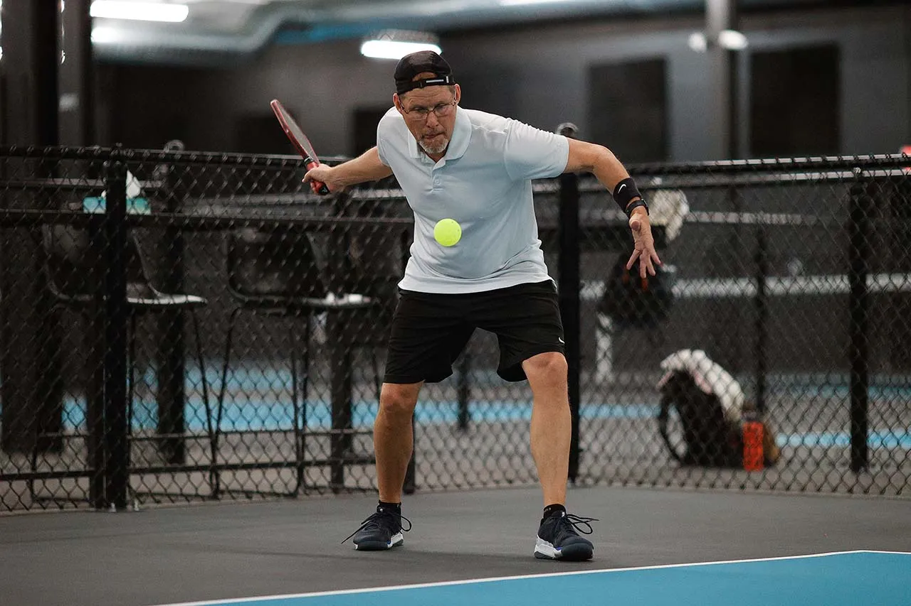

What is Pickleball?
Definition
History of Pickleball
Official Rules from USAP(As of 2025)
Overview
- Pickleball is played either as doubles (two players per team) or singles; doubles is most common
- The same size playing area and rules are used for both singles and doubles
The Serve

- The server's arm must be moving in an upward arc when the ball is struck.
- Paddle contact with the ball must not be made above the waist level.
- A 'drop serve' is also permitted in which case none of the elements above apply.
- At the time the ball is struck, the server's feet may not touch the court or outside the imaginary extension of the sideline or centerline and at least one foot must be behind the baseline on the playing surface or the ground behind the baseline.
- The serve is made diagonally crosscourt and must land within the confines of the opposite diagonal court.
- Only one serve attempt is allowed per server.
Service Sequence

- Both players on the serving doubles team have the opportunity to serve and score points until they commit a fault *(except for the first service sequence of each new game).
- The first serve of each side-out is made from the right-hand court.
- If a point is scored, the server switches sides and the server initiates the next serve from the lefthand court.
- As subsequent points are scored, the server continues switching back and forth until a
fault is committed and the first server loses the serve.
When the first server loses the serve the partner then serves from their correct side of the court (except for the first service sequence of the game*). - The second server continues serving until his team commits a fault and loses the serve to the opposing team.
- Once the service goes to the opposition (at side out), the first serve is from the right-hand court and both players on that team have the opportunity to serve and score points until their team commits two faults.
- In singles the server serves from the right-hand court when his or her score is even and from the left when the score is odd.
Scoring
Traditional Side-Out Scoring
- Points can only be scored by the serving team.
- A team scores a point when the opposing team commits a fault.
- Games are normally played to 11 points, win by 2.
- In tournament play, games may be to 15 or 21 points, win by 2.
Rally Scoring
- A point is scored after every rally, regardless of which team is serving. This method rewards success after each point.
Two Bounce Rule

- When the ball is served, the receiving team must let it bounce before returning, and then the serving team must let it bounce before returning, thus two bounces.
- After the ball has bounced once in each team's court, both teams may either volley the ball (hit the ball before it bounces) or play it off a bounce (ground stroke).
- The two-bounce rule eliminates the serve and volley advantage and extends rallies.
Non-Volley Zone (The Kitchen)
- The non-volley zone is the court area within 7 feet on both sides of the net.
- Volleying is prohibited within the non-volley zone. This rule prevents players from executing smashes from a position within the zone.
- It is a fault if, when volleying a ball, the player steps on the non-volley zone, including the line and/or when the player's momentum causes them or anything they are wearing or carrying to touch the non-volley zone including the associated lines.
- It is a fault if, after volleying, a player is carried by momentum into or touches the non-volley zone, even if the volleyed ball is declared dead before this happens.
- A player may legally be in the non-volley zone any time other than when volleying a ball.
- The non-volley zone is commonly referred to as "the kitchen."
Line Calls
- A ball contacting any line, except the non-volley zone line on a serve, is considered "in."
- A serve contacting the non-volley zone line is short and a fault.
Faults
- A fault is any action that stops play because of a rule violation.
- A fault by the receiving team results in a point for the serving team.
- A fault by the serving team results in the server's loss of serve or side out.
A fault occurs when:
- A serve does not land within the confines of the receiving court
- The ball is hit into the net on the serve or any return
- The ball is volleyed before a bounce has occurred on each side
- The ball is hit out of bounds
- A ball is volleyed from the non-volley zone
- A ball bounces twice before being struck by the receiver
- A player, player's clothing, or any part of a player's paddle touches the net or the net post when the ball is in play
- There is a violation of a service rule
- A ball in play strikes a player or anything the player is wearing or carrying
- A ball in play strikes any permanent object before bouncing on the court
Determining Serving Team
- Any fair method can be used to determine which player or team has first choice of side, service, or receive. (Example: Write a 1 or 2 on the back of the score sheet.)
If you want more details, theres always the USAP official handbook available here.
Pickleball Basic Terms
Dinks
- 
- A soft shot hit on a bounce from the NVZ intended to arc over the net and land within the opposing NVZ either straight across or diagonally crosscourt.
- An effective dink arcs downward as it crosses the net, creating a more difficult shot to return than a power shot.
- Dinks that land close to the net are the most difficult to return because of the steep angle required to get the ball over the net.
- Crosscourt dinks are easier because the net is lower in the center and you can force their opponent off the court, potentially opening a hole.
- Contact the ball in front of the body with the paddle face open, using a gentle lifting (pushing) motion.
- The shot is soft and controlled with movement from the shoulder, no wrist break and minimal or no backswing to avoid overpowering the ball.
- Be patient. Continue to dink until the opponent makes a mistake. If the ball is hit too high, there is a good chance for a put-away shot.
Drop Shot
- The drop is a soft shot hit off a bounce from deep in the court, intended to land in the opponents' NVZ, preferably close to the net.
- Allows the hitting team to follow the shot to the NVZ line. It is the primary 3rd shot, giving the serving team the opportunity to approach the net after the return of serve, but can also be effective anytime the opponents are at the net.
- One of the more difficult shots to master.
- Face the net and hit the ball underhand in front of the body, lofting it in an arc over the net. The ball should arc before reaching the net so it lands near the opponent's feet within or at their NVZ line.
- Move toward the net after hitting the ball. If you don't make it all the way to the NVZ line by the time your opponent hits the ball, stop and assume the ready position in preparation for the next shot, then quickly continue to the NVZ line.

Ground Strokes
- Move sideways into correct court position first. Avoid reaching; move the feet instead and prepare to meet the ball from the ready position.
- From the ready position pivot shoulders and hips so the non-paddle shoulder is facing the approaching ball and begin the backswing. Some players extend the opposite arm forward for balance.
- Step forward with the front foot toward the direction the ball is intended to go to create forward momentum. Bring the paddle forward to contact the ball in front of the body, preferably before the ball reaches the top of its bounce.
- The paddle head is angled slightly open (tipped back from vertical)
- Keep the wrist firm (not wobbly), but allow it to hinge backward enough to meet the ball squarely.
- Follow through to straighten the body and return to the ready position.
- Move into correct court position first. Avoid reaching; move the feet instead.
- From the ready position pivot shoulders and hips sideways so the paddle shoulder is toward a ball that is approaching the non-paddle side of the body.
- Bring the paddle arm across the body and extend the paddle shoulder to head high. Opposite arm may be extended across the body toward where the ball will be hit for balance or held behind the body (depends on what feels natural and "works" for each player.)
- Step forward with the front foot toward the direction the ball is intended to go to create forward momentum. Bring the paddle forward to contact the ball in front of the body, preferably before the ball reaches the top of its bounce. Weight on the front foot.
- The paddle head is angled slightly open.
- Wrist and forearm aligned, wrist firm (not wobbly).
- Follow through to straighten the body and return to the ready position.
Volleys
- 
- A ball hit in the air before it bounces onto the court during a rally.
- It is often used when at the NVZ line to return a ball hit hard and low over the net.
- May be hit forehand or backhand; backhand is more common.
- No backswing — hit in a blocking motion with the paddle face square (vertical) to "push" the ball over the net.
- Hit away from your opponent to make him/her reach.
- To hit the ball deeper, open the paddle face slightly to give the volley a little more loft.
Lobs
- 
- A lofted shot that sends the ball high overhead and deep.
- Purpose: To catch the opponent off guard or force him/her back to the baseline (offensive). It can also be effective as a defensive shot to buy time to get into position for an offensive shot.
- Offensive: An unexpected lob from the NVZ line over your opponent at the NVZ line or as he/she is running to the net.
- Defensive: A lob from the baseline allowing the lobbing team time to move to the NVZ line. However, players must be aware that the opponent may return the lob with an overhead smash (see below). It might be safer to use a drop shot as an approach shot instead.
- From the baseline, take a backswing and contact the ball in front of the body with paddle face open to lift the ball and send it high, then follow through fully (paddle at least head high).
- The trajectory should carry the ball over the opponent's outstretched paddle and land inbounds near the baseline.
- Lobbing over the opponent when dinking can create the advantage of surprise.
Overhead Smash
- 
- A hard, overhand shot directed downward into the opponent's court, usually as a return of an opponent's lob, high return, or high bounce.
- The paddle is extended over the head at maximum height with elbow straight.
- Aim at an open spot on the opponent's court or at the feet of an opponent, not at the body.
- Never back up to position for an overhead. Shuffle sideways or turn around and run into position. Backpedaling is a dangerous maneuver.
- Look up and point toward the ball with non-paddle hand.
- Contact the ball as high as possible and in front of you, shifting weight from the back foot to the front foot as the ball is contacted with a downward swing and often a wrist flex (snap).
- The backhand overhead smash may require flexing the wrist backwards.
Serving Basics
- 
- The purpose of the serve (at the developing levels) is simply to place the ball in play and is not intended as an offensive weapon.
- The serve must be hit with an underhand stroke so that contact with the ball is made below the waist. The arm must be moving in an upward arc and the highest point of the paddle head shall be below the wrist when it strikes the ball. The highest point of the paddle head cannot be above any part of the line formed where the wrist joint bends.
- The server has the option of dropping the ball and hitting it after the bounce. The ball can be dropped from any height but cannot be thrown, tossed, or otherwise released with any added force to bounce it.
- Serve to the diagonally opposite service court from behind the baseline and on or within the imaginary extension of the sidelines and centerline.
- Placement should be deep and to the center of the diagonally opposite service court to keep the receiver back.
- Follow through toward target and return to the ready position to be set to receive the service return.
- Don't continue into the court; remain behind the baseline until after the 3rd shot is hit.
Return of Serve
- 
- The main goal is to return the serve deep to keep the serving team at the baseline; power is not as important as control. A short return brings the serving team forward, allowing them to reach the NVZ line and negating the receiving team's advantage.
- The serve must bounce before being returned.
- Wait behind the baseline for the serve in order to permit moving forward to hit the return with momentum.
- The preferred service return stroke is a forehand with a backswing and follow through,
stepping forward to meet the ball in front of the body.
This allows the receiver to quickly move toward the net by following the natural momentum of the follow through. - A shot lofted deep to the opponent's backhand gives the receiver time to reach the NVZ line and keep the serving team back.
- Follow through, move to the NVZ line and return to the ready position to be set to return the next shot.
- Watch the ball. If you realize you can't make it all the way to the NVZ line before the ball is hit by the opponent, stop and assume the ready position. Return the ball, then continue to the NVZ line. Stop again if necessary. In tennis this is often referred to as the "split step."
Tips for New Pickleball Players
Getting Started
- Listen and accept suggestions that you've violated a rule. It's to your benefit.
- Don't try to serve hard or near the sidelines.
- Loft service returns so they go deep, giving you time to get to the non-volley line.
- Remember that both the serve and the serve return must bounce before you can hit the ball, so remain at or behind the baseline after serving to receive the third shot.
- Always get to the non-volley line as soon as you can. It's the strongest position.
- Face the player who will hit the ball, not the net. You will be better placed to hit the ball.
- Keep your paddle high, near your chest; your reaction time will be quicker.
- Keep the ball in play — let your opponent make the mistakes. Seventy-five percent of all rallies are won or lost because of unforced errors, many of them at the baseline.
- Return your baseline shots to the center line as often as you can.
- Use your forehand for power, especially on the serve return, but also developing a good backhand will give you a more complete game.
- Placement is much more important than power; emphasize control over pace.
- Don't try to make a lot of sideline shots; they are low percentage. Hit to open areas (i.e., hit it where they aren't).
- Make note whether an opponent is right or left handed. Avoid hitting to the opponent's strong side.
- Don't take your partner's shots away by crowding his/her position. Do move to the centerline when your partner is pulled to the sideline to return a shot.
Evaluating Your Game:
- Learn to dink the ball proficiently, both cross court and straight across the net. Be patient.
- Understand when to hit the ball hard or softly.
- Don't try to make a "kill" shot unless it's really there to make.
- Watch your opponent's paddle hit the ball; that tells you how fast the return will be and where it's directed.
- Hit the ball to the opponent's feet or backhand, especially if it's weak.
- Develop a drop shot (just over the net) from the baseline. This is an important shot when your opponent(s) are at the non-volley line. Don't use it when your opponents are near the baseline; keep them deep.
- Have friends hit some shots to you that you don't like and work at returning them. Maybe your opponent doesn't like them either. Try them on him or her.
- Look for patterns in your opponent's play that expose weaknesses and repetitive use of certain shots. Sometimes you can observe these "tells" during pre-game warmups.
- When your opponent is about to hit the ball, stop moving and assume the ready position. It's much easier to hit the ball under control if you are stationary and balanced.